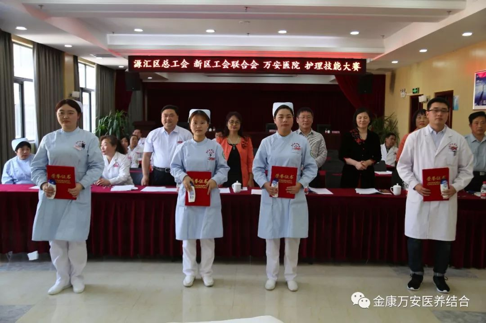

为进一步规范临床护理技术操作，为患者提供满意的服务，发掘我院护理队伍中优秀的人才；激发全院护理人员刻苦钻研业务、苦练技能的热情；展现我院员工积极向上、奋发进取的精神风貌，2018年4月27日下午，由源汇区总工会、新区工会联合会、漯河万安医院共同举办的护理技能竞赛在漯河万安医院四楼多功能厅举行。通过层层选拔，来自院内临床科室的10名一线护理人员参加了此次竞赛。
源汇新区工会联合会主席赵慧菊、源汇新区工会联合会专干王亚玲、万安医院院长王卫峰、副院长兼工会主席刘洋、副院长王立信、副院长银令令、副院长杨延顺等领导参加了此次竞赛活动。
院长王卫峰对源汇区总工会和新区工会多年来对我院工作的大力支持表示感谢，同时也希望各参赛人员在比赛当中，既要努力发挥最佳水平，更要注重团结协作，分享经验、取长补短，充分发挥医护人员良好的职业素养。要通过比赛开阔眼界、锻炼能力、提高水平。要总结经验不断深入，把加强医护人员的“三基三严”训练工作和实际操作技术比赛作为一项常抓不懈的任务，持之以恒，为保障广大市民身体健康做出应有的贡献。
源汇新区工会联合会主席赵慧菊表示，此次护理技能竞赛是提升医院护理人员技能水平的一次展示机会，源汇新区工会联合会也将继续一如既往的支持此类技能竞赛的举办，同时希望选手们在竞赛中能够赛出水平，赛出友谊。
王卫峰院长发言
赵慧菊主席发言
本次竞赛共设心肺复苏、无菌技术操作两个项目。我院张维霞、李洁、冻桂霞等医疗护理专家担任本次竞赛的评委。经过2个多小时的激烈角逐，来自我院老年病区护士张金金以优异的成绩荣获本次竞赛的一等奖；外科护士裴丽娜、老年病区护士郭雅君荣获二等奖；康复科护士刘琼、李丹和老年病区护士于向阳获得三等奖。
护理部主任赵黎光进行技术点评
一等奖获得者老年病区张金金
二等奖获得者老年病区郭雅君（右一）、外科裴丽娜（左一）
三等奖获得者老年病区于向阳（右一）；康复科李丹（右二）、刘琼（左一）
优秀奖获得者康复科冯镇阳（右一）、外科林燕飞（右二）、内科李亚楠（左一）、老年病区邱艳茹（左二）
“此次竞赛，不仅展现了我院医疗护理人员的专业技能，更重要的是，展现了全院护理工作者对工作的爱岗敬业，对业务的精益求精，以及对患者生命的高度负责。”会上，院长王卫峰指出，护理工作在临床医疗中有着举足轻重的作用，接下来，希望广大医疗护理工作者继续发扬立足本职、刻苦钻研的工作热情，进一步提升职业道德素养和岗位创新的能力，进一步提高医疗护理工作质量，更好的服务患者，保障患者生命安全。
竞赛人员与领导合影留念